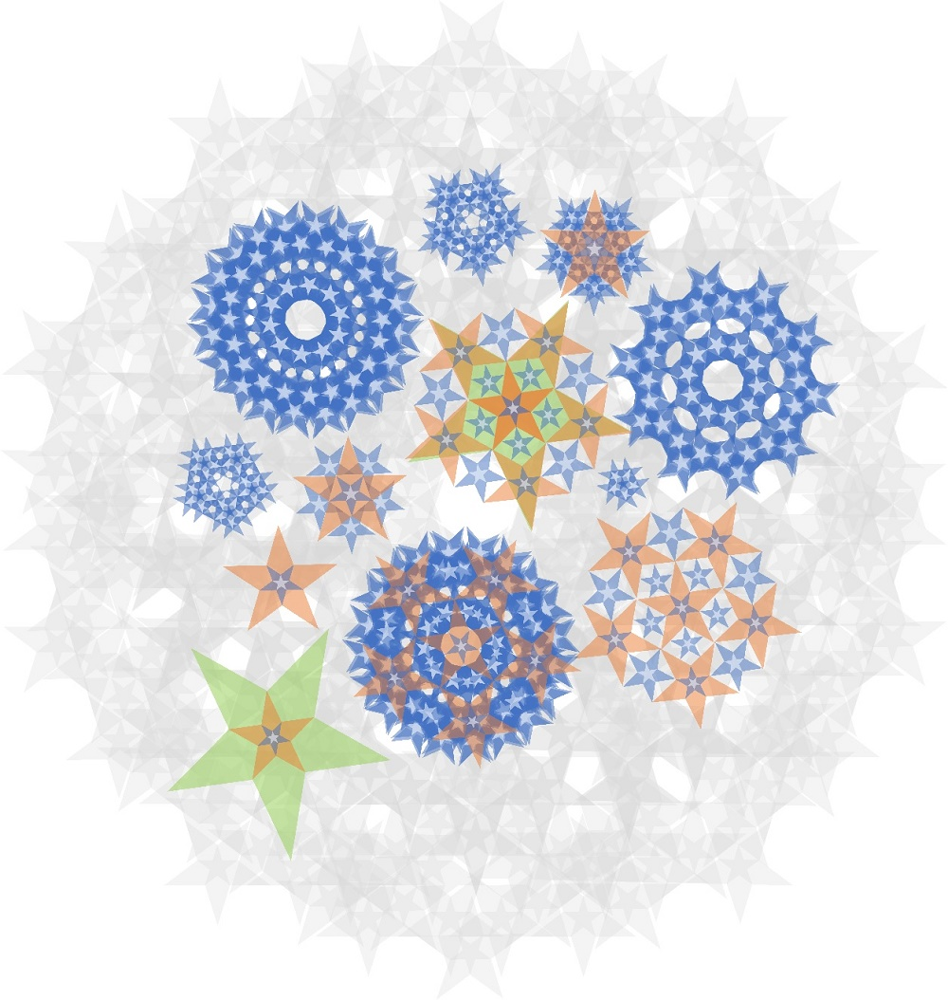

Признаться, посмеялась от души))))
1) %имярек% - это набор букв. Как это может хоть просвЯтлеть, хоть просвЕтлеть.... Хотя, если хорошенько направить мощную лампочку на монитор..... :idea:
2) А что с миром людей не так? Ну-как, расскажи, что тебя в нём заставляет чувствовать неправильность? По мне, так всё Ок. Хотя бывают интереснейшие ситуации.
1) Слово не зря издревле считается мощным носителем Световой информации. А тот, кто владеет "истинным Именем" какого-либо явления, обретает над ним абсолютную власть... Или освобождает человека от его власти над собой, что одно и то же. Хотя, Слово/Имя - не более, чем набор букв (или других кодирующих символов). И знание Имени не тождественно "знанию тела" обо всем явлении в целом. Видимо, есть в этом древнем механизме какая-то особенная магия, и причина столь особого места в судьбе человека различных знаковых систем...
2) По мне - тоже все ок. А что не ок, тоже достаточно скоро будет ОК. Не без нашей (магов) посильной помощи, конечно.
Но у Вселенной есть 2 принципиально разных "фазовых состояния". Физики вплотную приблизились к этому пониманию, сформулировав парадоксальные для разума принципы "квантовой механики". К "нашим баранам" ближе понятия "духовного"/"магического" и "материального" Мира. Являющиеся двумя областями внимания, которые нигде не пересекаются. Мы понимаем, что это один и тот же Мир, что он интегральный и на части не делится. Но мы не можем себе представить существование двух взаимоисключающих состояний Реальности. Одно из их обязано быть функцией (подсостоянием) другого, либо быть не реальным. В случае первого и второго внимания это очень похоже на первый вывод.
Но, как оказалось, это еще далеко не всеСм. также: Последний Отсчет (Мир в Мире), Зеир А"А proza.ru/2022/09/23/62* : )) В "волновом" варианте Реальности нет пространства и нет времени. Зато, категория "существования" расширена и включает в себя невозможное для первого внимания существование "вещей в Себе", являющихся неизменным и непостижимым фактом о самом себе. Из которого путем отражения в колодце бездны (второго внимания) затем появляется все сущее, которое мы привыкли считать таковым. Собственно, процесс эмергации сущего из ничего и называется вышеупомянутым Словом в оригинале. Другими словами, это принцип Намерения, как активной стороны Бесконечности. Существование во времени и пространстве, находящееся в постоянном изменений свойств и состояний, "накручивающихся" на пропеллер космической мельницы Колеса Времени.
Сам принцип существования реальности, в которой существует много почти одинаковых форм чего либо (Спойлер: например, людей), и в которой глазу не видно существование формы, в которой все это многообразие является одним, единым и единственным целым "объектом", кроме Которого не существует ничего, является признаком вроде "лакмусовой бумажки", указывающим на то, что сознание находится во сне. То есть в некотором объеме искусственным (и управляемым, конечно же) образом воспринимаемой "реальности", вроде киноленты или компьютерной программы. (Если во всем видеть единого и единственного себя, типа "я - это я, ты - это я, он - это я", это мало что меняет, поскольку все равно нет ответа на вопрос "нафига" здесь столько одинаковых "копий самого себя"). Легко убедиться, что "второе внимание" по этому качеству мало чем отличается от первого. И что этот принцип достаточно широко используется в неорганических мирах, неорганиками, например. То есть, тогда становится понятно, что один-единственный объект все таки существует. Если, например, ты решишься сунуть нос не в свое дело, и подойдешь к их кластеру опасно близко... То окажется, что это не сотня безобидных машинок, а один большой и предельно серьезный робот-десептикон. Этот принцип лежит в основе трех типов внимания и вообще всех форм существования сознания во всех мирах первого и второго типов внимания. То есть, куча мелких машинок, и один большой робот - не два разных объекта реального мира, а две разных степени отражения того, чем этот один единственный и единый реальный объект на самом деле является.
Это примерно то, что я хотел сказать, про вставание всего на свои места посредством осознания того, чем "я" точно не является. Хотя и это еще не все описание, но если я не остановлюсь пока на этом, то пост придется листать с помощью клавиш Page up и Page down :D :idea: Лучше дать сказать свое Слово другим.